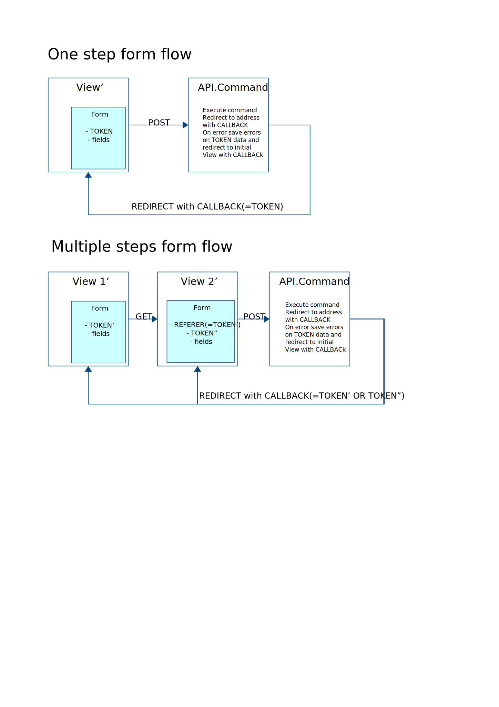

Generate data adapters from XML Schema files with `happymeal` script.
Use data adapters to transform data in different formats (xml, json, markup array) to php data objects and vice versa.
Application views is a user interface. Use an application views to present project resources and user forms.
